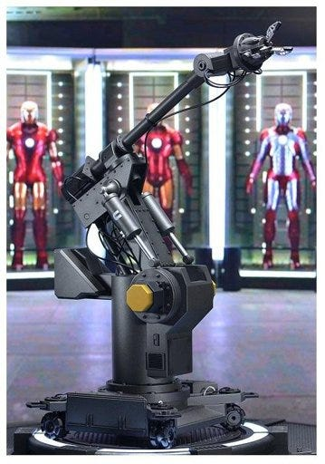
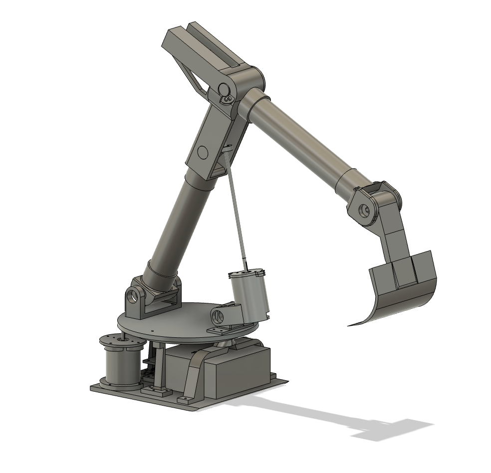
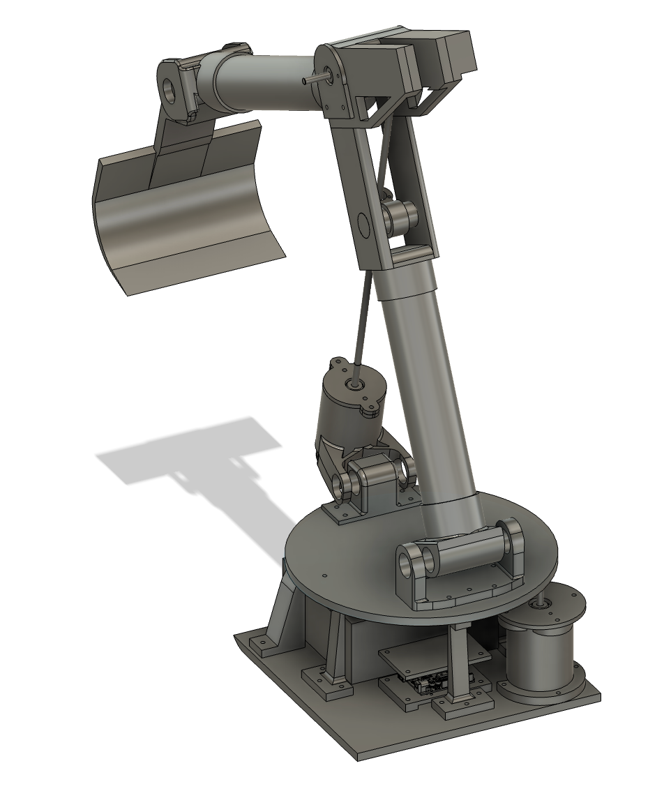
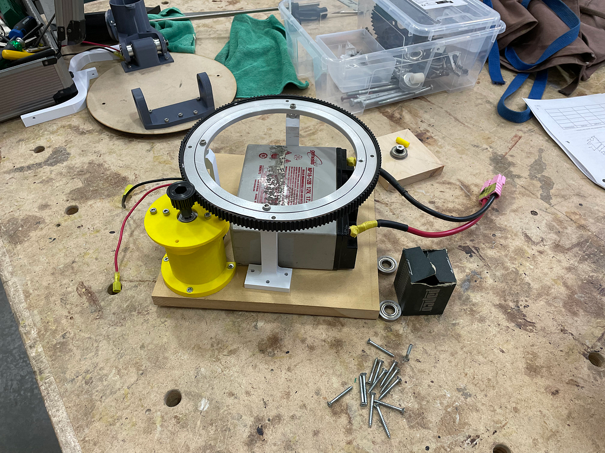
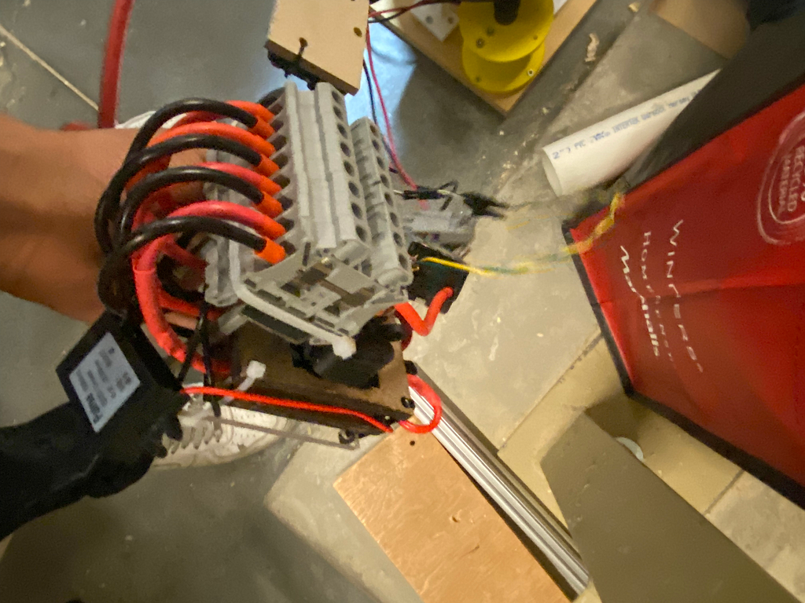
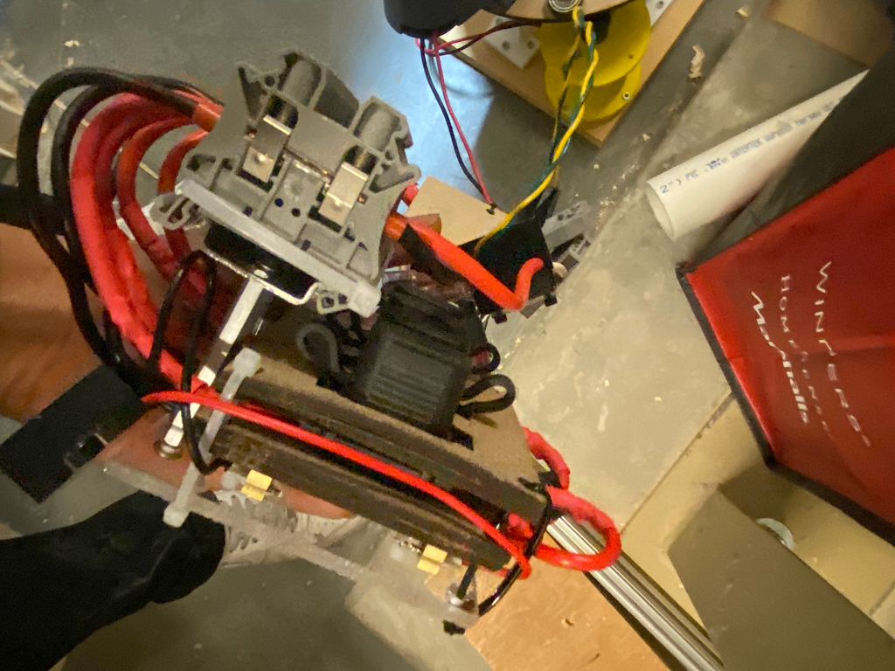
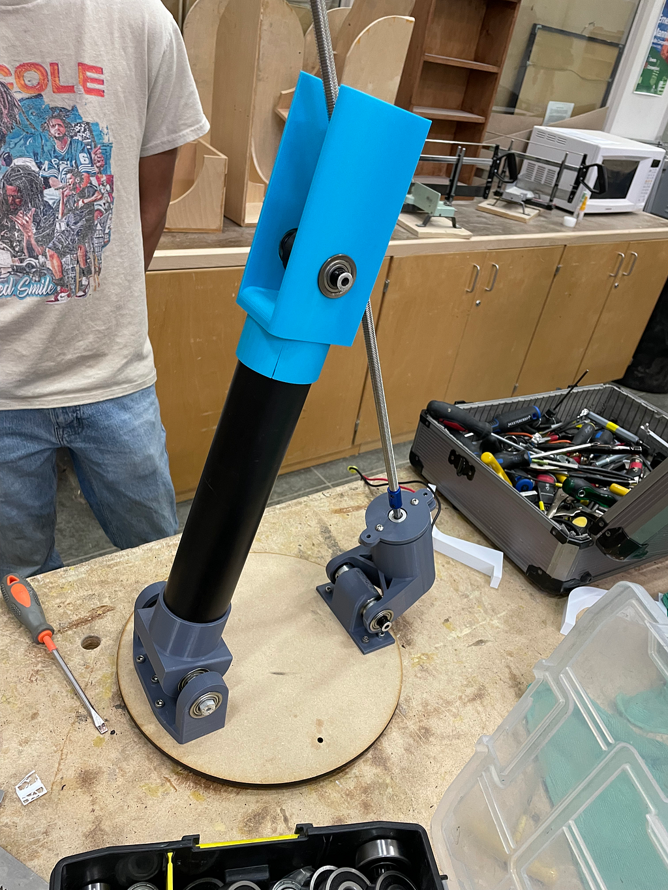
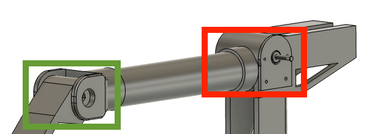
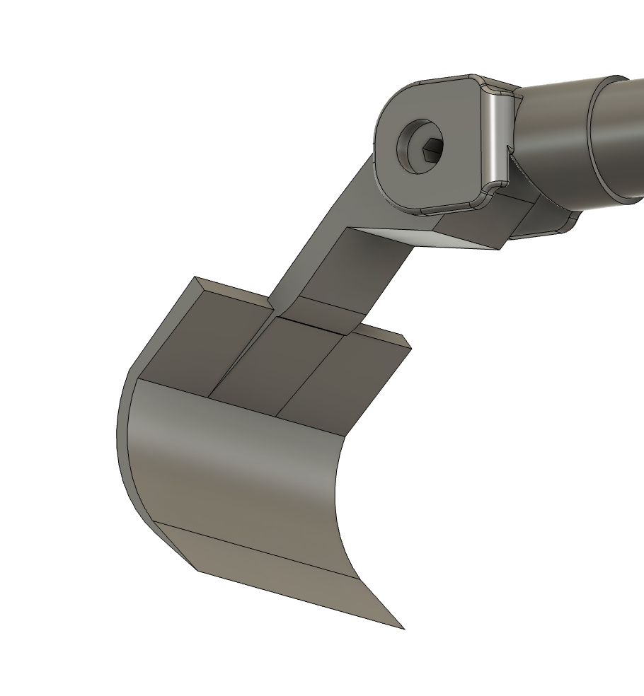
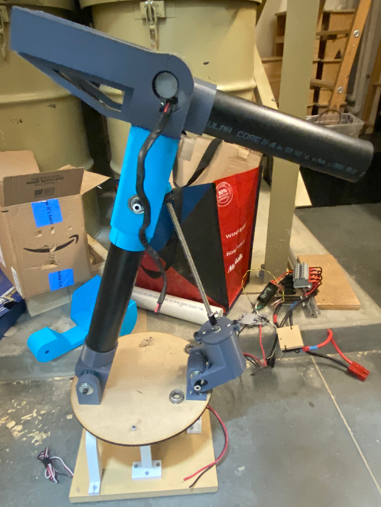

May 2024
Creating a Linear Actuated Robot Arm Pt.1
Creating a Robot Arm using a Linear Actuator Pt.1
Recently, my team and I have been working hard on our Science Olympics project. We were tasked with creating a robot arm that could collect and sort these multi-coloured balls from one bin and transport them to another bin. My main role on the team was designing and creating the arm itself and doing electrical for the arm so I am going to talk a bit about how that is going for me so far.
The moment I learned that we were making a robot arm, I went straight to the web and tried to find a design I could find inspiration from. Funny enough, my FRC team 4627 spent a lot of time post-season perfecting a robot arm so all of this was kinda ironic.
Eventually, I landed a design, it was the robot arm called “DUM-E” from the movie Iron Man. I thought it was the most cool-looking (and over-engineered) solution to our problem. Now obviously, our team had finite resources unlike the movie so I had to dumb it down a lot, but I made sure to keep the parts I thought were the most interesting on the robot.

The part of this arm that caught my attention first was the hydraulics that are used to move the first joint of the arm. I wanted to create something that could achieve the same motion. I landed on using a lead screw to create a linear actuator, but more on this later. First I’ll give a walkthrough of the arm from bottom to top.


The 3 main subsections of the arm are:
- Base and Swivel
- Linear Actuator/ First Joint
- Second Pivot/ Scoop
Fabrication Materials and Processes:
Every part of this arm has either been 3D printed, recycled from old parts or borrowed from my robotics team. The tube part of the robot arm is an old PVC pipe and the swivel is an old lazy Susan from the dining table.
1. Base and Swivel
The base will house all the electronics — 12V Battery, Arduino Uno, and my own custom-made PDP. — and a Mini CIM motor to control the swivel of the arm.

PDP
Since we are using 12V motors, we needed to improvise a way to distribute the power to all the motors. So I created my this makeshift PDP:


The positive and negative ends of the battery were attached to distribution lines. The positive end was connected to car fuses to act as breakers. The only downside to this was that they are not slow-blow fuses like a normal PDP, so it was important that we added a current limit in the code so we don't blow the fuses. I ran the negative end and the positive end from the fuses to terminal blocks so I could freely swap out the electronics I wanted.
The terminal blocks are on stand-offs, so I could save space as we are working in a tight space.
Motor Contol
We are using old Talon SRXs from our robotics team to control the Mini CIMs and we outfitted them to run off PWM instead of CANbus, the fact the talons are so versatile was a huge help in this project.
We simply took two of the four CAN wires and terminated them using 120 Ohm resistors and then took the last two CAN wires and ran one to the PWM port on the Arduino and the other one to the ground port.
Swivel
I am using a lazy susan to act like a turret. The outside part of the lazy susan is wrapped in an old belt, with the teeth facing outwards. There is a Mini CIM with a timing gear at the end of the shaft to control the spin of the lazy susan. The rest of the arm is attached on top of this lazy susan allowing for the arm to swivel.
2. Linear Actuator/ First Joint
I designed the robot arm’s main joint to operate using a linear actuator, for simplicity and reliability.
Linear Actuator
The linear actuator is by attaching a lead screw to the end of a mini CIM motor shaft. The CIM itself and the part of the linear actuator that is moving up and down are both attached and joined in order to allow the geometry to work. Both these joints along with the joint at the base of the arm allow for the entire joint to move up and down smoothly.

3. Second Pivot/ Scoop
Pivot and Motor
The second pivot is also run off a Mini CIM. This motor might be a bit overkill for this purpose but why not 🤷♂️ .

The motor (red box) is mounted away from the arm's end, this way we are avoiding unnecessary load at the end of the arm. The green box is the joint itself, this is where the end effector is attached, in this case, it is the scooper. The motor drives a belt which is connected to the joint.

The end effector is a simple scooper that is designed to simply pick up play-pin balls from a bin.
Progress so far:

Unexpected troubleshooting so far:
1. Vibrations: I noticed that vibrations, even the smallest ones, if consistent enough can cause a lot of damage. While testing the arm and the swivel, the small vibrations caused by the motors made the entire mechanism shake. Which eventually led to failure in several places including cracks in the prints and the joints coming apart.
2. Coupling: The linear actuator’s lead screw needed a coupler to attach to the motor shaft. The issue that arose was that when the lead screw was attached, it wasn't in line with the motor. This leads to an eccentric spin on the linear actuator, causing lots of violent vibrations.
Check out part two!